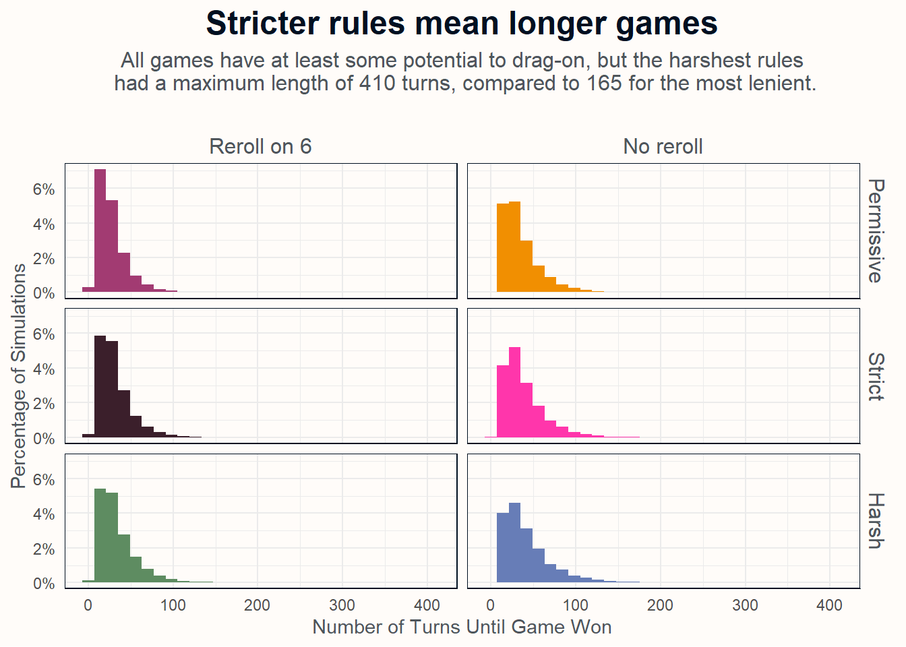
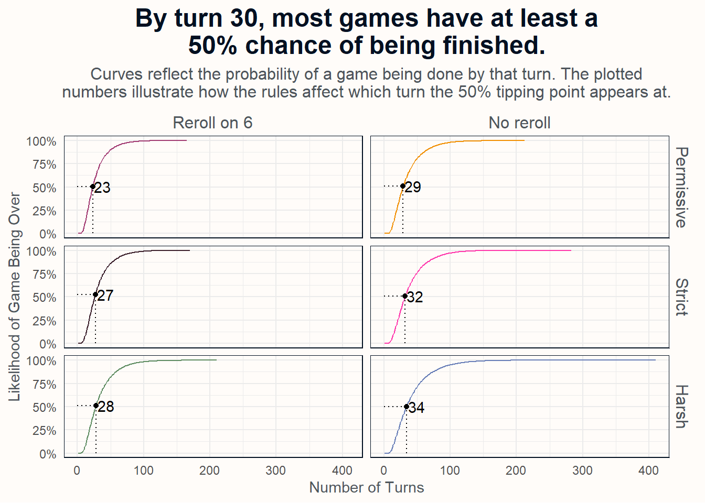
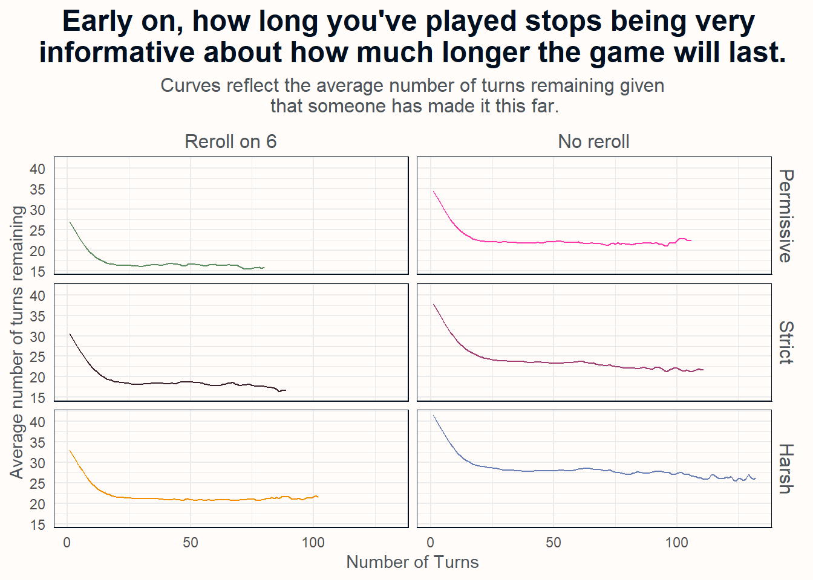

I Simulated 60,000 Games of Chutes and Ladders to See How Long the Average Game Takes.
An investigation using Python, R, and DuckDB
R
Python
simulation
games
Author
Peter Licari
Published
August 2, 2024
“CHUT3S & LADD3RS” by Peter Licari. Original base image by Jacqui Brown.
The other day, at my daughter’s behest, we sat down and played a game that I hadn’t played since I was close to her age: Chutes and Ladders1 I’ll be honest, I was never much of a fan. It wasn’t the style of game (I don’t—and didn’t—mind “race-to-the-finish” games) or the fact that it was entirely random (I love me a good rogueli[k|t]e)—it was the fact that the games always felt like they took forever to finish. Well that and I, inexplicably, as best as I can recall, have never won a single game of Chutes and Ladders.2.
The unlucky streak continued with my daughter…3 times. But I noticed that the games really weren’t taking as long as I had remembered. Which led me to the following two thoughts:
How long does it actually take to play a game of Chutes and Ladders, on average?
I could probably write-up some Python to figure it out.
Et voila. Here we are.
Background of Chutes and Ladders: How to play
For those who don’t know Chutes and Ladders, who haven’t played it in a while, or who join me in trying to suppress harsh memories of irrational-yet-perpetual losing streaks: Chutes and Ladders is a rather simple game with a storied history. You progress along a winding path usually 100 spaces long3 and either roll a six-sided dice or flick a six-sectioned spinner to advance your piece. Along the path are special spaces featuring, appropriately enough, “ladders”—advancing the player further along the board—and “chutes”—sending the player backwards or down to earlier on the board. Your aim is to navigate this minefield of boons and busts to land on the 100th square. If you’re playing with multiple people,4 whoever gets there first wins.
Some people may remember “Snakes” instead of “Chutes”, in the title. This isn’t one of the cases of the Mandela effect like the Berenstain Bears or the Cornucopia in the Fruit of the Loom logo.5 The “Chutes” bit was introduced by Milton Bradley in its version of the game in the 1940s, but there are loads of variants by other publishers that still use the snake motif.
But as Jill Lepore explores in her book The Mansion of Happiness, just about every version of the game has served as a morality parable—intended to steer those lamentably corruptible youths6 towards the righteous path. The game originated in India around the 2nd Century C.E and, in such versions, the “ladders” represented virtues and “snakes” represented vices; higher levels on the path featured iconography of the gods and lower levels featured plants, animals, and people. The idea being that proper and noble acts would elevate you along in the cycle of reincarnation whereas bad acts could lead you to being reincarnated as a lesser being. The Victorian English picked the game up and swapped-out specific icons to better adhere to their Anglican sensibilities—and, later, American versions put illustrations of kids doing “good deeds” going up the ladders and kids doing naughty stuff getting shuttled-down the chutes. The moral gist, then, is pretty much constant and universal: Do virtuous/industrious/good things to become an elevated/godly/goodly person; do bad things though, and you’ll suffer consequences—sometimes cosmic and karmic in nature.
Given this extensive history, you’d expect that someone would’ve studied how many turns it’d take to win a game on average. And you’d be right! But the answers aren’t terribly consistent!
According to Wikipedia, the Milton Bradley version of the game is expected to take “an average of 39.2 spins” to get to square 100. Yet a two-person game is “expected to end in 47.76 moves…based on a variant where throwing a six does not lead to an additional roll; and where the player must roll the exact number to reach square 100 and if they overshoot it their counter does not move.” The claim appears to be based upon the paper “Probabilites et esperances dans le jeu de serpents et echelles a deux jouers”. But plays are independent of each other! Multiple players can occupy the same space, you can’t help or hinder others—you’re just two little pawns hopping around on the board. Sure, you’re going about it together, but, when it comes down do it, it’s a fundamentally solitary endeavor.7 So I’m not entirely sure how the addition of a second player would shift the figure. And then this 2015 blog post from Ilan Man claims that, by turn 32, players will have a 50% chance of being on square 100!
I know gaps in the literature when I see them8. Not only do we have some different values, there are also apparently different ways you can play the game. (Which, spoiler alert, will absolutely affect the average duration):
You are, apparently, supposed to roll twice if you get a six—treating a six as normal is apparently a “variant” (news to me and my wife).
There are (at least) three different ways to deal with rolling a larger value than the number of spaces remaining on the board (e.g., being in space 98 and rolling a 3): You don’t proceed until you roll a value that’s no greater than the number of spaces remaining (which I’ll call “strict”); you go forward into spot 100 regardless (“permissive”); and you go forward to 100 and then go backwards however many movements remain (“harsh”).
So apart from “settling” how long it takes to play a “normal” game (which we weren’t playing, apparently), I’d also like to look into how these variations affect the number of turns until a victory.
As I alluded to earlier, one way to get at this is to code-up a set of simulations to answer the question. So I’m going to take the 6 different possible major rule variations I discussed above (2_{re-roll} \times 3_{end\_game\_rules}) and play 10,000 virtual games apiece. I’m going to use Python to generate the simulation, DuckDB to record the results, and R to tidy-up and visualize.
For those who are interested,9 there’s a section down below that gets into how things are coded. For everyone else, though, let’s get right at the results
Wait, how long am I going to be playing this game?!
Average Game Length
Let’s first look at the average number of turns that it takes to finish a game. As you might expect, the different combinations of rules result in different average lengths-of-play. The table below displays the average number of turns that it took to complete a game for each set of 10,000 simulations. As a reminder, “permissive” endgame rules means that if you’re, say, 4 spaces away from the end but roll a 6 you go right in. “Strict” rules say that you have to roll a 4 or lower; any higher and you stay where you are. “Harsh” says that you can go forward 4—but then you have to move backwards however many remains from the spinner roll.
Show the table code
connection <-dbConnect(duckdb(), file.path('data','shoots_ladders.db'))means_table <-dbGetQuery(connection,'SELECT rules_endgame, rules_reroll, MEAN(turn) as m_turnFROM results WHERE game_over GROUP BY rules_endgame, rules_reroll') |>mutate(rules_reroll =ifelse(rules_reroll,"reroll 6","no reroll"),rules_endgame =str_to_title(rules_endgame)) |>pivot_wider(names_from ='rules_reroll', values_from ='m_turn')dbDisconnect(connection)flextable(means_table) |>theme_zebra(odd_header ="#677db7",odd_body ="#f0f1fa",even_body ="#C6D2EF") |>set_header_labels(values =list(rules_endgame ="",`reroll 6`="Reroll on 6",`no reroll`='No Reroll on 6')) |>align(j =1:3, align ='center', part ='header') |>color(j =1:3, color ="#fffcf9", part ='header') |>autofit()
Reroll on 6
No Reroll on 6
Permissive
27.9068
35.4415
Harsh
34.0130
42.4694
Strict
31.4890
38.7912
Perhaps unsurprisingly, letting people re-roll on a 6 tends to make the games shorter. Though I’m honestly surprised how much shorter: letting players re-roll after a six reduces the duration of the game a full 8 turns on average. Comparatively, the difference between end-game rules induces less variation. There’s only an average difference of 4.4 turns between them. That said, the gap between “permissive” and “harsh” games is about 50% greater (6.6 turns); the gap between the harsher two modes is smaller than the gap between either of them and the permissive.
The biggest difference (again, perhaps unsurprisingly) is the most permissive set of rules (27.9 turns) compared to the harshest (42.5). Harsher rules lend to much longer games.
Distribution of Game Length
Ok but those are just the averages—and we don’t need to limit ourselves just to a single statistic to get a sense of the results. We can also look at the distribution of turns.
Each facet in the chart below plots out the 10,000 simulations ran for each of combination of end-and-reroll-rules. The X axis conveys the number of turns and the Y axis conveys how frequently the X value ended up being a game’s length.
Show plot code
# Establish DB connectionconnection <-dbConnect(duckdb(), file.path('data', 'shoots_ladders.db'))# Extract and transform datahistogram_data <-dbGetQuery(connection, 'SELECT * from results WHERE game_over') |>mutate(rules_reroll =ifelse(rules_reroll, "Reroll on 6", "No reroll"),rules_endgame =str_to_title(rules_endgame),cond =paste0(rules_reroll, rules_endgame) ) |>mutate(rules_endgame =factor(rules_endgame, levels =c('Permissive', 'Strict', 'Harsh')),rules_reroll =factor(rules_reroll, levels =c('Reroll on 6', 'No reroll')) )# Disconnect from DBdbDisconnect(connection)# Plotggplot(histogram_data) +aes(x = turn,y = ..count.. /sum(..count..),fill = cond) +geom_histogram() +facet_grid(rules_endgame ~ rules_reroll) +labs(title ='Stricter rules mean longer games', subtitle ='All games have at least some potential to drag-on, but the harshest rules\n had a maximum length of 410 turns, compared to 165 for the most lenient.\n') +theme_minimal() +xlab("Number of Turns Until Game Won") +ylab("Percentage of Simulations") +scale_y_continuous(labels = scales::percent_format(1)) +scale_fill_manual(values =c('#677db7','#f18f01','#ff36ab','#5e8c61','#a23b72','#3b1f2b')) +theme(text =element_text(colour ="#4E555B"),strip.text =element_text(size =12, colour ="#4E555B"),strip.background =element_rect(fill ='#fffcf9', color =NA),panel.border =element_rect(fill =NA, colour ="#001021"),plot.background =element_rect(fill ="#fffcf9", color =NA),legend.position ='none',#axis.text.y = element_blank(),panel.background =element_rect(fill ="#fffcf9"),plot.title =element_text(hjust = .5,size =18,face ="bold",color ="#001021", ),plot.subtitle =element_text(hjust = .5,size =12,colour ="#4E555B" ) )

A glancing look tells us a few things. Most obviously: these distributions are super asymmetric. You’ve got huge heaps of values hovering between 20-30 turns for all of the charts but then those right-tails streetttch out for quite a bit. They stretch less for the simulations that allowed re-rolling on 6; those games all wrapped up at or before 210 turns. The same can’t be said for when you didn’t re-roll. The worst case scenario for each of those was 212 (permissive), 283 (strict), and a whopping 410 (harsh).10
So maybe my childhood memories weren’t fuzzy; there’s a decent chance that some of those games really lasted 50+ moves! Which makes it even more remarkable that, again, I’m pretty sure I’ve never won one of them.
Survival Curves
If you recall, one of the pre-existing studies I mentioned in the intro really wasn’t quite like the others. (No, I’m not talking about the one with a French title). Two of the three focused on the average number of turns it would take to complete the game. The third instead focused on which turn players will start to have a greater than 50% chance of ending the game. They are semantically similar questions, but analytically distinct! The first is answered by analyzing means. We can get at the second through a little bit of survival analysis.11
Survival analysis is a branch of statistics that focuses on, you guessed it, survival. Namely, how many units of time does it take, on average, for something to perish. Applications include the obvious morbid topics (average life expectancy, disease prognostics, etc) but can be generalized quite easily to consider the rate of transitioning from one state into another.12 Here, we’ll focus on the transition from a game being in-progress to one being finished. The chart below plots the cumulative incidence function (with incidence meaning the incidence of transitioning into a winning game).
The x axis conveys the number of turns and the y conveys the probability that a game will have been completed by that turn. So for turn 0, there is a 0% chance that the game will have finished. Which, yeah, makes sense; the game hasn’t even started yet. But as we move along on the number of turns, that probability starts inching upwards. Slowly for the first couple of turns and then quite quickly. And that quicker pace persists until we start getting to truly long games of Chutes and Ladders, where it slows down again. It only hits 100% once we’ve hit the length of the longest game for the 6 conditions. Steeper slopes convey higher risks of a transition at that point and shallower slopes convey lower risks.
Show plot code
connection <-dbConnect(duckdb(), file.path('data', 'shoots_ladders.db'))# Extract and transform datasurv_data <-dbGetQuery(connection, 'SELECT * from results') |>group_by(description) |>filter(!(turn ==max(turn) &!game_over)) |>ungroup() |>#Calculate KM curvegroup_by(rules_endgame, rules_reroll, turn) |>summarise(group_n =n(), n_won =sum(game_over)) |>mutate(ind_prop = (group_n - n_won) / group_n,rules_reroll =ifelse(rules_reroll, "Reroll on 6", "No reroll") ) |>mutate(km =cumprod(ind_prop)) |>ungroup() |>mutate(cumrisk =1- km,cond =paste0(rules_endgame, '_' , rules_reroll)) |>mutate(rules_endgame =str_to_title(rules_endgame),cond =paste0(rules_reroll, rules_endgame) ) |>mutate(rules_endgame =factor(rules_endgame, levels =c('Permissive', 'Strict', 'Harsh')),rules_reroll =factor(rules_reroll, levels =c('Reroll on 6', 'No reroll')) )# Disconnect from DBdbDisconnect(connection)# Main Plotp <-ggplot(surv_data) +aes(x = turn,y = cumrisk,color = cond,group = cond ) +geom_line() +facet_grid(rules_endgame ~ rules_reroll) +theme_minimal() +xlab("Number of Turns") +ylab("Likelihood of Game Being Over") +labs(title ='By turn 30, most games have at least a\n50% chance of being finished.', subtitle ='Curves reflect the probability of a game being done by that turn. The plotted\nnumbers illustrate how the rules affect which turn the 50% tipping point appears at.') +scale_y_continuous(labels = scales::percent_format(1)) +scale_colour_manual(values =c('#677db7','#f18f01','#ff36ab','#5e8c61','#a23b72','#3b1f2b')) +theme(text =element_text(colour ="#4E555B"),strip.text =element_text(size =12, colour ="#4E555B"),strip.background =element_rect(fill ='#fffcf9', color =NA),panel.border =element_rect(fill =NA, colour ="#001021"),plot.background =element_rect(fill ="#fffcf9", color =NA),legend.position ='none',#axis.text.y = element_blank(),panel.background =element_rect(fill ="#fffcf9"),plot.title =element_text(hjust = .5,size =18,face ="bold",color ="#001021", ),plot.subtitle =element_text(hjust = .5,size =12,colour ="#4E555B" ) )## summary datasurv_summary <- surv_data |>group_by(cond) |>filter(cumrisk >= .5) |>slice_min(cumrisk, n =1)p +geom_segment(data = surv_summary,aes(x = turn, y =0, yend = cumrisk),color ='black',linetype =3 ) +geom_segment(data = surv_summary,aes(xend = turn, x =0, y = cumrisk),color ='black',linetype =3 ) +geom_point(data = surv_summary,aes(x = turn, y = cumrisk),color ="black",type =2 ) +geom_text(data = surv_summary,aes(x = turn +15, y = cumrisk, label = turn),color ='black')

We can see that there are some noticeable differences in the curves for the 6 groups. Here again, we see that games with re-rolls tend to finish more quickly: 50% of permissive end-games will be done by 23 turns, 27 turns for strict end-games, and 28 for harsh end games. For those without re-rolling, 50% of permissive end-games are done in 29 turns, 32 for strict, and 34 for harsh. But these latter three also can drag out for a while. As we noted before, there were a couple simulated games that even went into the 400s!
Another way to look at this through a survival analysis framework would be to look at the average number of turns remaining given a specific turn. This basically answers the question of “given that I’ve already played X turns, how much longer is this game likely to last?”13 That’s what the chart below does. (I should note that I top-coded extreme values to the 99th percentile for their respective scenarios. Otherwise the small sample sizes make the charts look weird.)
Show plot code
# Establish DB connectionconnection <-dbConnect(duckdb(), file.path('data', 'shoots_ladders.db'))# Extract and transform dataplot_data <-dbGetQuery(connection, 'SELECT * from results') |>group_by(description) |>filter(!(turn ==max(turn) &!game_over)) |>mutate(remaining =max(turn) - turn) |>ungroup() |>group_by(rules_endgame, rules_reroll) |>filter(turn <quantile(turn, .99)) |>ungroup() |>group_by(rules_endgame, rules_reroll, turn) |>summarise(mean_remain =mean(remaining),median_remain =median(remaining)) |>ungroup() |>mutate(cond =paste0(rules_endgame, '_' , rules_reroll)) |>mutate(rules_reroll =ifelse(rules_reroll, "Reroll on 6", "No reroll"),rules_endgame =str_to_title(rules_endgame) ) |>mutate(rules_endgame =factor(rules_endgame, levels =c('Permissive', 'Strict', 'Harsh')),rules_reroll =factor(rules_reroll, levels =c('Reroll on 6', 'No reroll')) )# Disconnect from DBdbDisconnect(connection)ggplot(plot_data) +aes(x = turn,y = mean_remain,color = cond,group = cond ) +geom_line() +facet_grid(rules_endgame ~ rules_reroll) +theme_minimal() +scale_colour_manual(values =c('#677db7','#f18f01','#ff36ab','#5e8c61','#a23b72','#3b1f2b')) +xlab("Number of Turns") +ylab("Average number of turns remaining") +labs(title ='Early on, how long you\'ve played stops being very \ninformative about how much longer the game will last.', subtitle ='Curves reflect the average number of turns remaining given\n that someone has made it this far.') +theme(text =element_text(colour ="#4E555B"),strip.text =element_text(size =12, colour ="#4E555B"),strip.background =element_rect(fill ='#fffcf9', color =NA),panel.border =element_rect(fill =NA, colour ="#001021"),plot.background =element_rect(fill ="#fffcf9", color =NA),legend.position ='none',#axis.text.y = element_blank(),panel.background =element_rect(fill ="#fffcf9"),plot.title =element_text(hjust = .5,size =18,face ="bold",color ="#001021", ),plot.subtitle =element_text(hjust = .5,size =12,colour ="#4E555B" ) )

We can see that the expectations start off a bit high and then go down pretty quickly. Interestingly, they pretty much hold consistent for quite a long time. If you’ve played for 20 turns in a game with re-rolls on 6, the data suggests that you should expect about 15-20 more turns. But if you’ve played 100 turns you should expect to play…about 15-20 more turns. This implies that there’s quite a stretch of time where length that’s already transpired isn’t super informative about how many more turns you’re likely to go. This makes sense: after all, aspirations for moral cultivation aside, Chutes and Ladders is fundamentally a game of chance.
What did we learn?
We’ve learned quite a few things from this analysis:
How long you can reasonably expect to play a game of Chutes and Ladders depends on what rules you play by—and there are a few different rulesets floating about out there. But the most important rule change appears to comes in whether you allow players to re-roll after they get a 6.
Long games go very long. Possible durations are asymmetrically distributed. Meaning that while a bunch of games may end around turn 20, there’s a decent chunk that will end somewhere north of 60—or even 100.
None of these results match any of the previous estimates that I found. At least not when you do an apples-to-apples comparison based off the rules they assumed during their estimations.
In general though, you should expect a game of Chutes and Ladders to last about 30-35 turns. Even when accounting for the different variants, it appears to be a good rule of thumb.
Why do these results differ from the others? I suspect it’s because of a difference in approach. The other efforts modeled Chutes and Ladders as a Markov chain, with each space having a certain probability of transitioning into every other space on turn 1, turn 2, turn 3, etc. I, however, brute forced it by having my computer actually play 60,000 games. I’m not going to say that my results are more correct than theirs—given that there’s not actually a whole lot of daylight between them, it seems a bit silly to claim any are unimpeachably right. But they do suggest that it’s likely a bit closer to an average of 35 turns than it is 39 or 42.
All in all, is that going to change how often I play with my daughter? Probably not. I recently read that parents spend 70% of the time they’re ever going to spend with their kids by the time those kids are 12. I don’t care if it’s Chutes and Ladders or Candyland, Battleship or the Bluey Video Game—I’m taking every minute I can get. And, hopefully, all these games will mean that we can push that 70% mark off for a little while; that playing together now means we’ll be able to play when she’s older. Shoot (or perhaps “chute”), maybe even when she has kids of her own. I’d like that.
But, I’ll be honest, it very well may change which set of rules I suggest at the beginning—especially if, hypothetically, Daddy wants to hurry up to switch to a game where he isn’t apparently preternaturally cursed to lose.
Coding Chutes and Ladders
The remainder of this post goes into how I coded the game. The first bit discusses how I articulated the game’s rules into a python class and the second discusses how I went about making about 2.2 million simulated turns of Chutes and Ladders.
Turning the game into code
Below is the code defining a custom class called “chute_player” that empowers the actual simulation. The class has a number of methods and attributes that make it easy to pop the code into a “for” loop and let the computer go brrrr for a while. You can expand it to see how these were all actually encoded but, thematically, they can be broken out into four groups:
Rules: Methods and attributes that encode the rules of the game. E.g., whether a re-roll of 6 means we roll again and whether we need to hit the exact number to move into the finish.
Position: Methods and attributes that define the current position of the piece, determining if the player is on a chute, ladder, winning space, or on a standard space.
Movement: Methods that spin a 6-sectioned spinner14 and advance the piece along the route. Critically, it also will move players forward or backwards to the correct location (at least as determined by the Milton Bradley version of the game at my local library) if they land on a chute or a ladder.
Informational: Identifying whether the player has currently won the game and recording their current status.
This recording happens in a local DuckDB database. I recorded every turn and not just the last turn to facilitate the survival analysis. Plus, as I’m fond of saying: You can always aggregate individual values into more general summaries but you generally can’t decompose general summaries into individual values.
Show the code
import pandas as pdimport duckdb as dbimport randomimport osclass chute_player:def__init__(self, end_rules ='permissive', re_roll_six =True):## Attributes### Positionself.n_turns =0self.position =0self.current_roll =0self.last_roll =0self.cl_dictionary = { #### Base on MB game found in library1:38,4:14,9:31,16:6,21:42,28:84,36:44,48:26,49:11,51:67,56:53,62:19,71:91,80:100,87:24,93:73,95:75,98:78 }### Rulesself.end_rules = end_rulesself.re_roll_six = re_roll_sixmatch end_rules:case'permissive':self.endgame_rule =self._endgame_permissivecase'harsh':self.endgame_rule =self._endgame_harshcase'strict':self.endgame_rule =self._endgame_strict### Game endself.game_over =False## Methods### Roll the dice or spin the spinnerdef roll_dice(self): result = random.randint(1,6)self.current_roll = resultreturn(self)### Try to advance the piece. Only if game isn't over! def attempt_advance_piece(self): roll =self.current_roll current_position =self.positionifself.position >=100:self.game_over =Trueifself.game_over isFalse:if (100- current_position) >5 :self.position += rollif (roll ==6) &self.re_roll_six isTrue:self.n_turns -=1self.roll_dice()self.attempt_advance_piece()self.n_turns +=1else:self.position +=self.endgame_rule(roll, current_position)if (roll ==6) &self.re_roll_six isTrue:self.n_turns -=1self.roll_dice()self.attempt_advance_piece()self.n_turns +=1### Evaluate if space is either chute or ladderdef check_chute_ladder(self): current_position =self.positiontry: new_position =self.cl_dictionary[current_position]except: new_position = current_positionfinally:self.position = new_positionreturn(self)### Record information into a duckdb databasedef record_status(self, description =None): current_info = pd.DataFrame( {'description':[description],'turn': [self.n_turns],'position': [self.position],'rules_endgame': [self.end_rules],'rules_reroll': [self.re_roll_six], 'game_over': [self.game_over] } )with db.connect(os.path.join('data','shoots_ladders.db')) as con: con.sql('CREATE TABLE IF NOT EXISTS results (description VARCHAR, turn INTEGER, position INTEGER, rules_endgame VARCHAR, rules_reroll BOOLEAN, game_over BOOLEAN)') con.sql('INSERT INTO results SELECT * FROM current_info')### Various types of endgame rule checksdef _endgame_permissive(self, roll, current_position): remaining =100- current_positionif remaining >= roll:return(roll)else:return(remaining)def _endgame_strict(self, roll, current_position): remaining =100- current_positionif remaining >= roll:return(roll)else:return(0) def _endgame_harsh(self, roll, current_position): remaining =100- current_positionif remaining >= roll:return(roll)else:return((100-(roll-remaining)) - current_position)
Let’s go ahead and just take a quick peak at the structure of the data that’s recorded to the database:
import duckdb as dbwith db.connect(os.path.join('data','shoots_ladders.db')) as con: con.sql('SELECT * FROM results LIMIT 10')
The first column is an identifier for one of the 60k games; turn says what the turn is; position is the piece’s position at the end of the turn; rules_endgame states what kind of end-rule we’re working with; rules_reroll states whether we re-roll on 6; and then game_over, well, tells us if the game is over!
Running the simulation
In order to find out how many turns it takes to win Chutes and Ladders, I’m running a total of 10,000 games for all 6 combinations of end-game rules (“permissive”, “strict”, and “harsh”) and re-roll rules (re-roll on six, don’t re-roll on six). What that means with my class is basically 4 loops all nested inside each other like a Russian doll.
The innermost loop is a while loop which terminates once an attribute titled game_over evaluates to True. Each loop can be thought of as a turn within the game and consists more-or-less of the following steps:
Check if the game is over. If not continue, otherwise break.
Roll the dice/spin the spinner.
Attempt to advance the piece according to the results of the roll, keeping in mind the end-game and re-roll rules.
Check if the spot we’ve landed on is either a chute or ladder. Move the piece accordingly.
Record the status of the move for the database.
Rinse and repeat until the game recognizes that the piece is on space 100 and that the game is over.
Next is a for loop, set to go for 10,000 iterations. That’s the 10,000 games which will give us a decent sense of that game mode’s distribution of results and its average tendency. After that is a for loop that cycles through whether you do/do not re-roll after a six. Finally is one last for loop which cycles through the three different endgame rules. So assuming that the games end in an average of 40ish turns, we’re looking at running 40 \times 10,000 \times 2 \times 3 = 2,400,000 turns of digital Chutes and Ladders.
Below is the code that runs all that looping. In case you were thinking of running this yourself though—I’ll warn you that it took my PC about 26 hours.15 So, ya know, use at your own risk!
for endrule in ['permissive','strict','harsh']:for rollrule in ['reroll','noreroll']: rr = rollrule =='reroll'for i inrange(10000): cl_game = chute_player(end_rules=endrule, re_roll_six=rr)while cl_game.game_over isFalse: cl_game.roll_dice() cl_game.attempt_advance_piece() cl_game.check_chute_ladder() cl_game.record_status(description=f'{endrule}_{rollrule}_{i}')print('Game done!')
And that’s it! If you’ve gotten this far, thanks for reading! 🖤
Footnotes
We were more of a Life family, growing up. It was Monopoly for my wife—meaning that, no matter what, this kid’s in store for some harsh life lessons in board-game form.↩︎
In hindsight, this was the universe forshadowing that I had bottomed-out my luck stat↩︎
Wikipedia informs me that some versions may also be 64 or 144 spaces long, being played on 8 x 8 and 12 x 12 space boards, respectively.↩︎
To anyone who plays this game by themselves: You ok bud? I’m here if you need someone to talk to.↩︎
Ok, but seriously, that the cornucopia actually existed and the marketing team is pulling a fast-one is a low-stakes conspiracy that I genuinely buy into.↩︎
I guess the analogies with life go deeper than just morality.↩︎
Hold on, let me bust out my GSAT words: I know lacunae when I see them.↩︎
And, I mean, who doesn’t find multilingual data science riveting? I even use Python classes in all this; it’s enough to get even the most sedate fella hot under-the-coller.↩︎
That’s part of the fun with doing a large number of simulations. 1–5,000 works plenty fine—but 10,000+ shows you the really weird outcomes.↩︎
Ok, fine, yes, we could’ve also done this by looking at medians—which give us the exact same answer as calculating survival curves. But, I don’t get much of a chance to make survival curves in my day-to-day so I wanted to have a little fun. And, also, it’s my blog and I’ll survival-curve if I want to.↩︎
And indeed it frequently is! One of the most prevalent non-medical/insurance uses for these methods comes in figuring out time-to-failure for mechanical parts.↩︎
Though if we’re being realistic: If it went on too long then the expected length of time becomes infinite…because the toddler has assuredly gotten bored and has asked to do something else.↩︎
Or, I guess, a six-sided dice. Mechanically, they’re both a pull from a categorical distribution which is all the same Python code; half-a-dozen in one hand and six in the other.↩︎
Though I maybe could’ve shaved a bit of time off if I didn’t have the Olympics playing on a second monitor. But, jokes aside, not terribly much.↩︎
![]()

{kind=link}